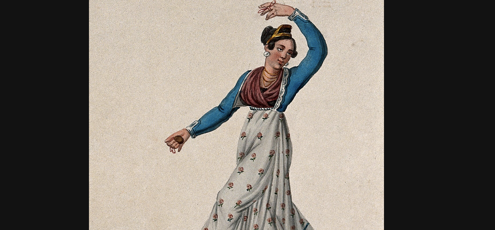

Joy is connected to heightened emotional states like ecstasy, euphoria and pleasure. These feelings can pass quickly, often leaving us wanting more. Expressions of joy such as laughter can release tension and mitigate the effect of stress on the body.
New artworks by Harold Offeh, David Shrigley and Amalia Pica explore themes of resilience, humour and hope, and consider the power of shared joy to help us overcome difficulty. During the pandemic, and despite physical distancing, communities have found creative ways to experience intimacy and connection. Altruistic behaviour has been found to increase in times of adversity.
These commissions are shown alongside contemporary artworks and historic objects that consider the many different kinds of positive emotion, with their relationship to the body. Situated throughout the gallery are observations from poets, scientists, historians and activists reflecting on the impact of joy within our bodies, and how different generations have sought to reclaim and redefine it.
Timothy Bobbin
Edition: J Hayes for E Orme, London, 1810

The engraving by Timothy Bobbin – the pseudonym of the artist John Collier – is a caricature of Charles Le Brun’s ‘Passions of the Soul’, displayed in the gallery downstairs.
Bobbin renders his drawings of expressions more crudely than Le Brun, transferring the action to a pub. One character is weeping, which elicits a broad smile from his companion. Is the artist suggesting that he is taking pleasure from the other person’s pain or that the two experiences are intertwined?
Harold Offeh
The dance floor promises a moment of euphoric release. Throughout history people have danced to express religious devotion, or to subvert social expectations. Many communities use dance and movement as a way to process difficult experiences and heal.
Harold Offeh has collaborated with the choreographer Vânia Gala on a series of online workshops bringing together artists Veronica Cordova de la Rosa, Samra Mayanja, Ebun A Sodipo and Offeh to explore the restorative qualities of dance. The installation is completed by a soundwork by sound designer Xana and photographs by the artist Eloise Calandre.
Originally proposed before the pandemic, the commission was reconfigured due to physical distancing guidelines. The dancers’ movements are produced in response to a series of instructional scores, such as shaking, passing out and dancing in slow motion. The work considers the complex relationship between societal trauma and public manifestations of dance. These can be redemptive but can also hint at something darker. For the commission, Offeh researched the history of medieval dancing manias. While the causes of the manias are unclear, these eruptions of spontaneous dancing in the street were viewed as either mass hysteria or a form of spiritual possession.
As you enter the gallery, you walk down a corridor. On the walls and floor are black-and-white photographs of dancers printed onto yellow vinyl.
There is a large black-and-white projection ahead of you with four dancers, each depicted against a blank wall. All the walls in the gallery are painted yellow, the colour of happiness.
The dancers on the projection are involved in a hypnotic trance-like movement. To the right of the projection are a series of flat-screen monitors installed vertically at different angles. Two of them are on the walls, and the other two are on poles, forming a semi-enclosed circle.
The display creates a sense of intimacy with the performers. Each of them depicted in their own home but brought together in the gallery. Social intimacy broaching physical distance.
Each screen displays a performer participating in a movement workshop, devised by myself and the choreographer Vânia Gala. The dancers are moving to a series of scores that act as prompts. These include shaking, passing out and turning, and the movements are variously vigorous and intense, and then slow.
The workshop was originally intended to happen in the same place, but we did it online due to lockdown measures, which means each participant is performing on their own at home, the installation forming a type of surrogate dance floor in which you as the viewer are participating. The films are edited so you can start and stop watching whenever you want.
David Shrigley 2021
Throughout the gallery David Shrigley presents a new series of drawings that respond to everyday moments of joy. While his topics are far-reaching, Shrigley’s deliberately crude black-and-white drawings are deceptive in their simplicity. Using humour to disarm the viewer, his subjects often include dark and complex themes that suggest laughter is a moment of reprieve as well as a coping strategy for difficulty.
From dancing in the street to sharing a meal, social experiences can bring us together and increase our sense of trust and belonging. The objects in this room reflect on the pleasure of being with others and the contagious qualities of joy.
Do we smile because we’re happy ourselves or do we perform a smile to make others feel better? Emotions are complex constructions of our minds, bodies and environment, long debated by scholars, but one certainty is that part of their nature is social. From the ways we are taught to feel as children, to ancestral memories unknowingly carried in our DNA, there are many ways in which our emotions are shaped by others.
The evolutionary psychologist Robin Dunbar believes that friendship is one of the most important influences on not only our personal wellbeing but how long we live. If the quality of our relationships so significantly affects our health, it is vital that we make time to build and maintain social connections.
Charles Darwin, 1872
Edition: D Appleton and Co., New York, 1873

Babies develop the capacity to smile and laugh before they acquire verbal language. These expressions play a role in deepening connection between people and putting others at ease. Charles Darwin’s influential book was one of the first studies to bring together ideas about emotion and evolution, and to define emotions as biological. In this chapter, ‘Joy, High Spirits, Love, Tender Feelings, Devotion’, Darwin documents different reflexive smiles, comparing them to similar displays of behaviour in animals.
Harrold Offeh, 2001
2 mins 58 secs, courtesy of the artist.
The artist Harold Offeh smiles through gritted teeth while listening to Nat King Cole sing the song ‘Smile’. The melody was originally written by Charlie Chaplin in 1936, at the height of the Great Depression, to celebrate hope in the face of adversity. Offeh’s performed smile is more like a grimace, complicating the original lyrical intent. By enduring the smile over the length of the song, Offeh creates an unease that suggests that facial expression can hide as much as exhibit true feelings.
Phil Nobel 2020
Reproduction 2021 © Reuters
Jason Baird and Andrew Baldock – aka the Stockport Spider-Man – achieved global fame through this image, taken during the UK’s first lockdown in spring 2020. With physical distancing guidelines in place, families booked Spider-Man to entertain children outside their homes with spectacular martial art displays. From clapping for the NHS to an unprecedented number of charitable acts, the national lockdowns saw many creative expressions of community connection.
Aiden Moseby, 2015
Reproduction, 2021. Courtesy of the artist
There are many systems that measure wellbeing, yet few have used a wide variety of emotions as their basis. In digital form, Aidan Moesby’s periodic table responds to Twitter users’ mentions of emotions, changing the colour of the designated squares and creating a collective landscape of the mood of a particular location.
Moesby wants to broaden emotional literacy by providing a more nuanced language for talking about positive and negative emotion.
Unknown maker c.1850
Unknown Maker, c 1850
The name of this Italian folk dance comes from the word ‘tarantism’: a condition attributed to the bite of a spider, dating back to the 11th century.
Those who had supposedly been bitten, usually women, would feel sickness and fatigue before becoming catatonic. Musicians would play uplifting melodies with increasing tempo until the victim began a frenzied dance. It was thought that this would dispel the venom from the body. Whether the condition was caused by spiders or other traumatic experiences, the ritual provided an important outlet for female suffering.
Unknown maker c.1850
Unknown Maker, c 1850

The name of this Italian folk dance comes from the word ‘tarantism’: a condition attributed to the bite of a spider, dating back to the 11th century.
Those who had supposedly been bitten, usually women, would feel sickness and fatigue before becoming catatonic. Musicians would play uplifting melodies with increasing tempo until the victim began a frenzied dance. It was thought that this would dispel the venom from the body. Whether the condition was caused by spiders or other traumatic experiences, the ritual provided an important outlet for female suffering.
P Lombard, after F Cleyn, 1654
This engraving depicts people sacrificing a goat in front of the god of intoxication, freedom and ecstasy – known as Dionysus to the Greeks, Bacchus to the Romans. The festivals of Dionysia took place around the agricultural calendar, occurring in the spring, connecting the celebration to concepts of fertility and renewal.
Through wild and joyous dancing, revellers could reach a state of mental and spiritual freedom as a way of paying their respects to this god.
This black-and-white print captures a moment of ecstatic joy, and it references an ancient festival celebrating the god of wine, known as Dionysus to the Ancient Greeks and Bacchus to the Romans.
In the centre of the image, a goat is being brought to be sacrificed while semi-naked Athenians are wearing masks and vine leaves. They dance in abandon under a Bacchus statue, who is depicted as a young child holding a bunch of grapes.
In the background to the left of the main action, two women hang effigies of the god on tree branches. At a tree further in the background, a naughty goat can be seen damaging the bark of a tree.
While Roman literature portrays these festivals in simplistic terms – as a space of partying and drinking – they also served an important religious function. By losing their sense of self, people could unite with the divine through their ecstatic state. This would lead to physical and mental elevation. Dionysus was a cause for joy among mortals, as he made all sorrow disappear and brought sleep and forgetfulness of daily suffering.
From festivals to sports arenas, night clubs and carnivals, societies throughout history have designated spaces for ecstatic release as an important release valve from the stresses and strains of everyday life.
Barry Lewis, 1982
Printed 2021. Courtesy of the artist
The photographer Barry Lewis documented Butlin’s holiday resort in Skegness during an editorial assignment in the 1980s. Taken from his series, this image captures the carefree spirit of relaxing on holiday. The motto “Our true intent is all for your delight” is a quote from Shakespeare’s ‘A Midsummer Night’s Dream’ and adorns every Butlin’s camp, acting as a guiding principle for the package-holiday operator.
Gerardus Harderwyck, 1496
This anonymous drawing illustrates Aristotle’s belief that senses were gateways of perception, which is the subject of Harderwyck’s publication. Aristotle believed that our hearing, smell, taste, vision and touch were intimately connected to knowledge, wisdom and, ultimately, happiness. In this illustration, lines lead from the senses to the brain and heart, the gatekeepers of balance.
Henry, Earl of Monmouth, London, 1649
Translated from J F Senault’s original French version
This engraving represents Christian thinking about the proper and improper uses of the passions. They are chained together, connected at the top to reason, and below to love, representing the idea that all passions should be motivated by a virtuous love and held in check by reason.
Joy is represented by a woman holding a jug and a goblet, suggesting the risks of intoxication. The accompanying text by Senault taught that true joy can only be found in heaven.
In al-Qānūn fī-t-tibb of Ibn Sīnā (The Canon of Avicenna), 1632
Exhibition audio and transcription: Sarah Garfinkle
This is an Islamic medical encyclopedia transcribed in Isfahan, Iran, in 1632. It contains the research of the physician Abu Ali Ibn Sīnā (Avicenna), who lived between 980 and 1037 CE, and remained a medical authority for centuries. The page opening shows an anatomical drawing of the digestive and nervous system, which was where he considered psychological problems such as grief and melancholy to originate. This theory resonates with contemporary research into the connection between intestinal and mental health.
The shaping of emotional experience through internal changes in the body has long been recognised. In 1894, the American philosopher William James argued that the mental aspects of emotion, the “feeling states”, are a product of physiology – or the body’s internal signals.
Our heart does not pound because we are afraid; fear arises from our pounding heart.
Similarly, feelings of optimism and happiness have also been connected to changes in the body. Both heart-rate deceleration and heart-rate acceleration are observed in happiness and joy. High heart rate variability or HRV, which is the variation in the time interval between heartbeats, is associated with resilience and the potential to be both optimistic and stoical at times of adversity.
How the body is today can also predict emotions tomorrow; higher rates of HRV can predict optimism levels in the future.
Experiments also show that how we perceive internal bodily sensations influences how we experience emotions. As emotional feelings are thought to arise, in part, through the sensing of internal bodily changes, those individuals who are better able to sense bodily sensations, a process known as interoception, tend to experience emotions with greater intensity.
Every time our heart beats, it sends a signal to our brain, so our brains are in constant and dynamic communication with our internal bodily organs. In addition to this “neural sensing” of our hearts, we can also sense them consciously – where we may suddenly become aware of their pounding, or of a skipped beat.
And these changes in how our heart beats – and our neural and conscious perception of these – can help shape our emotional feeling states. That acceleration of our heart to pure joy can contribute to feelings of happiness.
So, next time you feel a strong emotion, take a moment to sense associated bodily changes. Could these be contributing to how you are feeling?
Copy of the 17th-century encyclopedia San-ts’ai t’u-hu, compiled by Wang Ch’I and Wang Ssu-I, unknown date
This book is believed to be a copy of the 17th-century Chinese encyclopedia ‘San-ts’ai t’u-hu’. It is open on a diagram depicting the ‘ruler’ of all organs, the heart, which is understood to be both the reflective and the emotional centre of a human being. In traditional Chinese medicine, different feelings are associated with different organs, and joy is located in the heart.
The shaping of emotional experience through internal changes in the body has long been recognised. In 1894, the American philosopher William James argued that the mental aspects of emotion, the “feeling states”, are a product of physiology – or the body’s internal signals.
Our heart does not pound because we are afraid; fear arises from our pounding heart.
Similarly, feelings of optimism and happiness have also been connected to changes in the body. Both heart-rate deceleration and heart-rate acceleration are observed in happiness and joy. High heart rate variability or HRV, which is the variation in the time interval between heartbeats, is associated with resilience and the potential to be both optimistic and stoical at times of adversity.
How the body is today can also predict emotions tomorrow; higher rates of HRV can predict optimism levels in the future.
Experiments also show that how we perceive internal bodily sensations influences how we experience emotions. As emotional feelings are thought to arise, in part, through the sensing of internal bodily changes, those individuals who are better able to sense bodily sensations, a process known as interoception, tend to experience emotions with greater intensity.
Every time our heart beats, it sends a signal to our brain, so our brains are in constant and dynamic communication with our internal bodily organs. In addition to this “neural sensing” of our hearts, we can also sense them consciously – where we may suddenly become aware of their pounding, or of a skipped beat.
And these changes in how our heart beats – and our neural and conscious perception of these – can help shape our emotional feeling states. That acceleration of our heart to pure joy can contribute to feelings of happiness.
So, next time you feel a strong emotion, take a moment to sense associated bodily changes. Could these be contributing to how you are feeling?
Ground floor

First floor